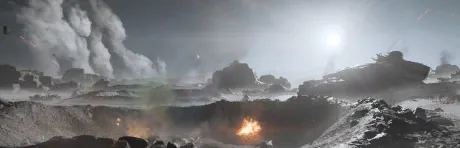

月球

the Moon is a Sandy 类型 生物群系 that can be found on 多种星球 in 绝地潜兵 2.
描述
“崎岖不平的孤单卫星，地下埋着极其珍贵的矿产。
Similarly to the Desert Dunes 生物群系, the Moon 生物群系 is composed of grey sandy dune-based 地形, more often than not being flat, however, it still features occasional hills, and rarely a set of misty springs and ponds. Very prominently, it features craters all over the 浮出地面.
小型 and 中型-sized grey rocks and rock formations cover the 浮出地面, providing sudden cover. In between the rocks and the sand, 有时 tall, dead shrubs can be found.
Notably, the 大气层 of a Moon 行星 is very thin as 否 clouds ever form whatsoever, and literal space is clearly 可见 from the 浮出地面 whether during the day or at night. While unspecified, air seems to be present on the 行星 as cities and colonists seemingly thrive on the 浮出地面. A 庞大 approaching grey sandstorm can also be seen in the backdrop of the 行星, though it will not disappear 无论 whether a sandstorm event occurs.
浮出地面 Variations
Metropolises
In parks located in Metropolises, the usual sandy 地形 can be found. Although the 生物群系 seemingly has 否 trees, trees 通常 seen in Primordial biomes （例如 火山 Jungle) will generate, having purple leaves in this 生物群系.
Any rock formations 通常 found on the 浮出地面 are completely missing.
Environmental Conditions
环境危害
- Occasional misty springs, harmless, though they slow down any 绝地潜兵 deciding to take a bath
- Tall dead Ferns, slowing any creatures walking through down
天气
1: Adding screenshots of the given 天气 conditions during the day and night
2: Providing brief descriptions of the 天气 条件.
- 清楚
- 流星风暴
Planets
 Widow's Harbor
Widow's Harbor RD-4
RD-4- Claorell
- Maia
- Curia
- Sirius
- Rasp
- Terrek
- Dolph
- Fenrir III
 Zosma
Zosma- Euphoria III